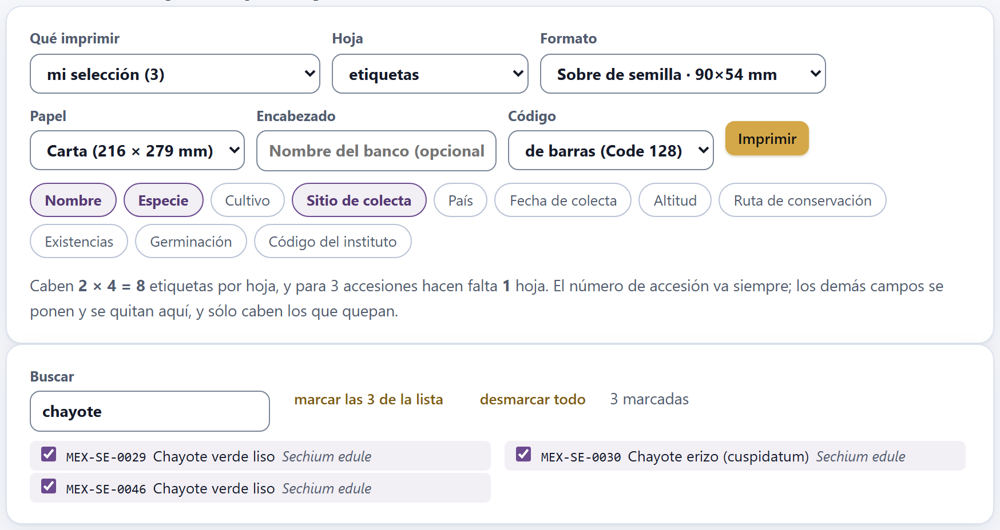
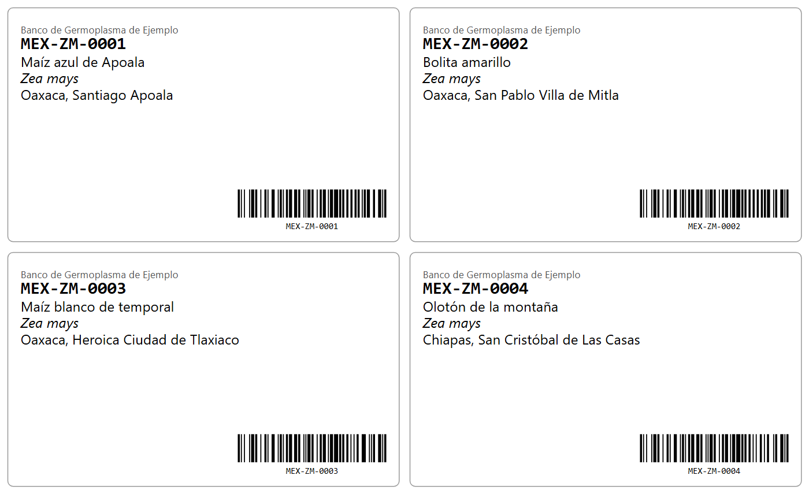
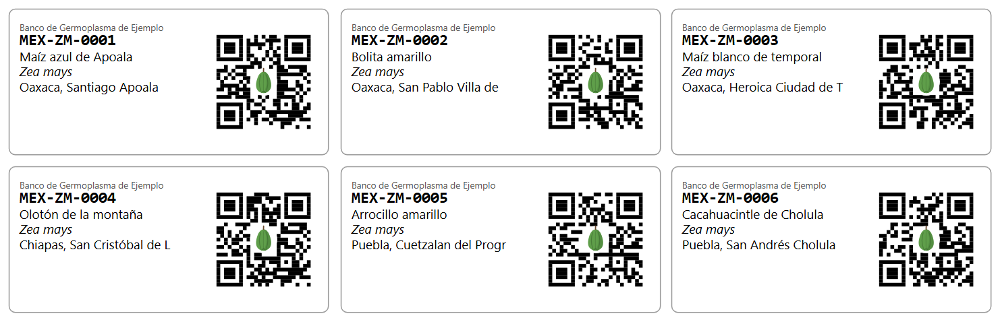
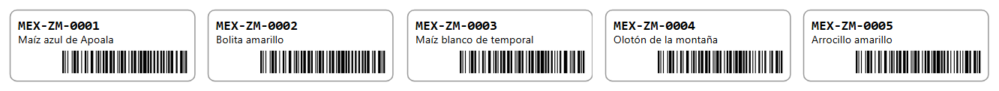
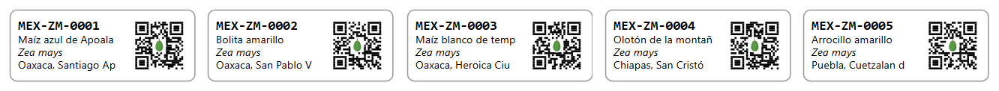
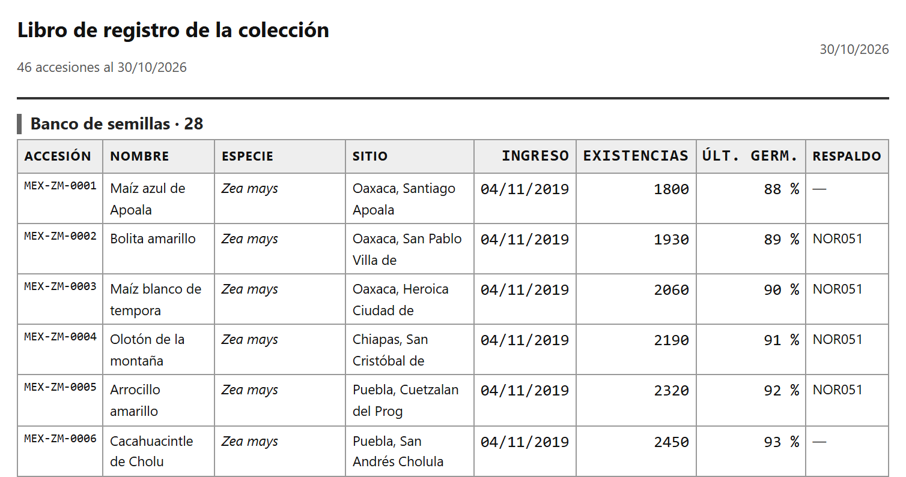

Etiquetas y registro
Todo lo que entra al banco o sale de él lleva papel: la etiqueta del sobre, del frasco, de la estaca o del criotubo, y la hoja que acompaña al material. El Bloque 9 imprime esas etiquetas a su medida real, en milímetros, con un código de barras Code 128 o un código QR que la propia app genera, sin bibliotecas de fuera; y prepara las tres hojas de trabajo del banco: la lista de siembra para una regeneración, el vale de distribución y el libro de registro de la colección. No calcula nada nuevo: toma el pasaporte del Bloque 2, la colección núcleo del Bloque 7 o los lotes en apuros del Bloque 8, y lo pone en papel.
- 9.1Qué se imprime
- 9.2Los cinco formatos y cuántas caben en una hoja
- 9.3Lo que dice cada etiqueta
- 9.4El código de barras Code 128
- 9.5El código QR y el chayote del centro
- 9.6Imprimir y comprobar
- 9.7La lista de siembra
- 9.8El vale de distribución
- 9.9El libro de registro
9.1Qué se imprime
El bloque tiene dos secciones: 1 · Qué se imprime y en qué formato, con los controles, y 2 · La hoja, tal como saldrá impresa, con la vista previa. Lo que ves en la segunda sección es exactamente lo que manda el botón Imprimir a la impresora: la app esconde al imprimir el título, los controles y las notas. Si no hay accesiones, el bloque dice Primero carga tus accesiones en el Bloque 2.
![El título Bloque 9 · Etiquetas y registro, el párrafo de presentación y la sección 1: los selectores Qué imprimir en toda la colección (46), Hoja en etiquetas, Formato en Sobre de semilla · 90×54 mm, Papel en Carta (216 × 279 mm), el campo Encabezado con el texto de ayuda Nombre del banco (opcional), el selector Código en de barras (Code 128) y el botón Imprimir; debajo, once botones de campo con Nombre, Especie y Sitio de colecta encendidos, y la línea Caben 2 × 4 = 8 etiquetas por hoja, y para 46 accesiones hacen falta 6 hojas](../img/b9-controles.png)
El selector Qué imprimir decide qué accesiones entran, y vale para las etiquetas y para las tres hojas de trabajo:
| Opción | Ej. | Qué accesiones toma |
|---|---|---|
| toda la colección (46) | 46 | Todo el pasaporte, en su orden. Es la opción de fábrica. |
| la colección núcleo del Bloque 7 | 5 | Las accesiones del núcleo, si ya lo armaste en el Bloque 7 (capítulo 7). Con la caracterización de ejemplo y el núcleo de fábrica del 10 %, son MEX-AG-0024, MEX-TC-0027, MEX-CU-0040, MEX-CH-0042 y MEX-ZM-0043. |
| los lotes en apuros del Bloque 8 | 10 | Las accesiones con al menos una alerta grave en el Bloque 8 (apartado 8.4): las mismas 10 del recuadro Lotes en apuros. |
| mi selección (0) | — | Las que marques a mano en la lista que aparece debajo (figura 9.2). |
Si eliges la colección núcleo del Bloque 7 sin haber armado antes el núcleo, la app no te avisa: toma las 46 accesiones, y la hoja dice «46 accesiones». Antes de imprimir el núcleo, mira que el número de accesiones de la vista previa sea el de tu núcleo.
El selector Hoja elige qué se imprime: etiquetas, lista de siembra, vale de distribución o libro de registro. Los controles de formato, papel, encabezado, código y campos sólo aparecen con las etiquetas. El encabezado, sin embargo, también sale en la esquina de las tres hojas de trabajo: si quieres el nombre de tu banco en el vale, escríbelo primero con la hoja de etiquetas y luego cambia de hoja.
Escoger accesiones a mano
Con mi selección aparece debajo de la sección 1 una lista con casillas, una por accesión, con su número, los primeros 28 caracteres del nombre y la especie. El cuadro Buscar filtra por número, nombre, género, especie o sitio de colecta, sin distinguir mayúsculas; el botón marcar las N de la lista marca todas las que deja el filtro, y desmarcar todo vacía la selección. La lista enseña hasta 400 accesiones; si hay más, afina la búsqueda.

La selección sigue marcada aunque cambies la búsqueda, y la opción del selector dice cuántas llevas: mi selección (3). Vive sólo mientras la app está abierta: al recargar la página se pierde.
9.2Los cinco formatos y cuántas caben en una hoja
El selector Formato trae cinco tamaños de etiqueta, uno por objeto que se rotula en un banco; el nombre de cada opción lleva su medida. Papel elige hoja carta (216 × 279 mm, la de fábrica) o A4 (210 × 297 mm). La app dibuja cada etiqueta con un borde gris de esquinas redondeadas, que es la línea de corte: está pensada para imprimirse en hoja completa de papel adhesivo y recortarse, no para hojas de etiquetas precortadas de un tamaño comercial.
| Formato | Medida (mm) | Letra (mm) | Carta | Hojas | A4 | Hojas |
|---|---|---|---|---|---|---|
| Sobre de semilla | 90 × 54 | 3.2 | 2 × 4 = 8 | 6 | 2 × 5 = 10 | 5 |
| Frasco de cámara | 63 × 29 | 2.5 | 3 × 8 = 24 | 2 | 3 × 9 = 27 | 2 |
| Estaca de campo | 95 × 35 | 4.2 | 2 × 7 = 14 | 4 | 2 × 7 = 14 | 4 |
| Criotubo | 33 × 13 | 1.9 | 5 × 17 = 85 | 1 | 5 × 18 = 90 | 1 |
| Etiqueta de envío | 100 × 62 | 3.4 | 1 × 4 = 4 | 12 | 1 × 4 = 4 | 12 |
La columna Letra es la altura del texto de los campos; el número de accesión va 1.25 veces más grande. En el sobre, 3.2 mm equivalen a unos 9 puntos tipográficos; en el criotubo, 1.9 mm son unos 5.4 puntos, que se leen con lupa o con muy buena vista: para eso está el código.
La app deja un margen de 8 mm en cada orilla del papel y 2 mm entre etiquetas. En cada dirección caben las etiquetas que entran en el papel menos los dos márgenes, contando que la última no lleva separación detrás:
| columnas = ⌊(216 − 2 × 8 + 2) / (90 + 2)⌋ = ⌊202 / 92⌋ = ⌊2.20⌋ = 2 | |
| filas = ⌊(279 − 2 × 8 + 2) / (54 + 2)⌋ = ⌊265 / 56⌋ = ⌊4.73⌋ = 4 | |
| por hoja = 2 × 4 = 8 | hojas = ⌈46 / 8⌉ = ⌈5.75⌉ = 6 (la última con 6 sobres) |
| en A4: ⌊(210 − 14) / 92⌋ = 2 columnas; ⌊(297 − 14) / 56⌋ = 5 filas → 10 por hoja y 5 hojas | |
Es la cuenta que resume la línea de debajo de los botones: Caben 2 × 4 = 8 etiquetas por hoja, y para 46 accesiones hacen falta 6 hojas. La etiqueta de envío, de 100 mm, no cabe dos veces a lo ancho (2 × 100 + 2 = 202 > 200 mm) y va en una sola columna.
La vista previa enseña todas las hojas, una debajo de otra, cada una con su pie hoja 1 de 6, que no se imprime. Con la colección entera y un QR en cada etiqueta, armar las hojas tarda un momento: mientras, la app enseña su ventana de espera.
9.3Lo que dice cada etiqueta
Cada etiqueta lleva, de arriba abajo: el encabezado, si escribiste uno, en letra chica y gris; el número de accesión (ACCENUMB), siempre, en negritas y letra de ancho fijo para que no se confundan el cero y la O; los campos que enciendas, uno por renglón, y el código, abajo a la derecha si es de barras y a la derecha, de arriba abajo, si es QR.

Los once botones de campo se encienden y se apagan con un clic; los de fábrica son Nombre, Especie y Sitio de colecta. La app recuerda tu elección y el encabezado de una sesión a otra.
| Botón | Campo | Cómo sale (MEX-ZM-0001) |
|---|---|---|
| Nombre | ACCENAME | Maíz azul de Apoala |
| Especie | GENUS SPECIES SUBTAXA | Zea mays, en cursivas; con la subespecie si la hay: Zea mays subsp. parviglumis |
| Cultivo | CROPNAME | Maíz |
| Sitio de colecta | COLLSITE | Oaxaca, Santiago Apoala |
| País | ORIGCTY | México: el nombre del país, no el código ISO |
| Fecha de colecta | COLLDATE | 12/08/2019 (día/mes/año); una fecha incompleta como 2021---- sale «2021» |
| Altitud | ELEVATION | con «m» detrás |
| Ruta de conservación | GP_CONS | Banco de semillas (o la que se deduce de STORAGE) |
| Existencias | GP_STOCK | 1800, sin unidad |
| Germinación | GP_GERMPCT | 88 % |
| Código del instituto | INSTCODE | el código FAO del instituto |
Un campo vacío no deja renglón en blanco: se salta. Los renglones se cortan, sin puntos suspensivos, cuando llegan al borde o al QR, con un cálculo aproximado del ancho de las letras. Y sólo caben los que quepan: si un renglón ya no entra antes del código de barras o del borde de abajo, la app lo omite sin avisar. La tabla 9.4 dice cuántos campos caben en cada formato; los que sobran son los últimos que encendiste.
| Formato | Code 128 | QR o sin código | Code 128 con encabezado | QR con encabezado |
|---|---|---|---|---|
| Sobre de semilla | 9 | 11 | 8 | 10 |
| Frasco de cámara | 4 | 7 | 3 | 6 |
| Estaca de campo | 2 | 4 | 2 | 3 |
| Criotubo | 1 | 3 | 0 | 2 |
| Etiqueta de envío | 9 | 11 | 9 | 11 |
Fíjate en la estaca: con código de barras sólo caben dos campos, así que de los tres de fábrica el sitio de colecta no sale. En el criotubo con código de barras sale un solo campo, y ninguno si además pones encabezado. El encabezado, en cambio, no se corta: un nombre largo invade el QR (apartado 9.5). Escríbelo corto, una sigla o el código del instituto.
9.4El código de barras Code 128
La opción de fábrica del selector Código es de barras (Code 128). El código lleva sólo el número de accesión, y debajo, el mismo número en letra legible (salvo en el criotubo, donde no cabe). No es un dibujo: la app escribe el código según la norma, y las pruebas de la app lo vuelven a leer para comprobarlo. Con las 46 accesiones de ejemplo, el lector propio de la app recupera los 46 números sin un error.
Un Code 128 es una fila de símbolos. Cada símbolo tiene tres barras y tres espacios que miden de 1 a 4 módulos y suman siempre 11 módulos; el módulo es la raya más delgada del código. Hay 107 símbolos, con valores de 0 a 106. El código empieza con un símbolo de arranque que fija el juego de caracteres —B (valor 104) para letras, números y signos del ASCII imprimible, o C (105), que guarda dos dígitos por símbolo—, sigue con los datos, un dígito de control y el símbolo de parada, que mide 13 módulos. A mitad del código se puede pasar de un juego a otro con los símbolos 99 (a C) y 100 (a B). En el juego B, el valor de un carácter es su código ASCII menos 32.
La app pasa al juego C cuando vienen al menos seis dígitos seguidos, o cuatro si son los últimos y son pares: así el código queda más corto y, en el mismo espacio, con barras más anchas. El lector suma los mismos productos y descarta el código si el control no cuadra: por eso un código mal leído casi nunca da un número equivocado, sino ningún número.
Los siete primeros caracteres van en el juego B; los cuatro dígitos finales son pares y cierran el texto, así que la app cambia al juego C y los guarda en dos símbolos.
| arranque B = 104 · M = 77 − 32 = 45 · E = 37 · X = 56 · − = 13 · Z = 58 · M = 45 · − = 13 · a C = 99 · «00» = 0 · «01» = 1 | |
| 104 + 1×45 + 2×37 + 3×56 + 4×13 + 5×58 + 6×45 + 7×13 + 8×99 + 9×0 + 10×1 | |
| = 104 + 45 + 74 + 168 + 52 + 290 + 270 + 91 + 792 + 0 + 10 = 1 896 | |
| 1 896 mod 103 = 1 896 − 18 × 103 = 42 | módulos = 11 × 12 + 13 = 145 |
| anchos: arranque 211214 · M 113123 · E 132113 · … · control 112133 · parada 2331112 | |
Sin el cambio al juego C, los cuatro dígitos ocuparían cuatro símbolos en lugar de tres, y el código mediría 156 módulos. Las 46 accesiones de ejemplo tienen números de la misma forma (tres letras, guion, dos letras, guion, cuatro dígitos) y todas miden 145 módulos.
El código ocupa un ancho fijo en cada formato, así que el módulo sale de dividir ese ancho entre los módulos del código. Del módulo depende que el código se lea: cada raya debe tener varios puntos de la impresora. Una impresora de 300 puntos por pulgada pone un punto cada 0.085 mm.
| Formato | Ancho del código (mm) | Alto de las barras (mm) | Módulo (mm) | Puntos a 300 ppp |
|---|---|---|---|---|
| Sobre de semilla | 34 | 6.4 | 0.234 | 2.8 |
| Frasco de cámara | 26 | 5.0 | 0.179 | 2.1 |
| Estaca de campo | 30 | 4.6 | 0.207 | 2.4 |
| Criotubo | 22 | 4.0 | 0.152 | 1.8 |
| Etiqueta de envío | 42 | 8.3 | 0.290 | 3.4 |
Un número de accesión más largo hace el módulo más fino, porque el ancho no cambia. A la derecha del código queda el margen de la etiqueta, de 1.6 a 3.5 mm, que en todos los formatos es mayor que los diez módulos de zona en blanco que pide la norma; a la izquierda no hay nada. En el criotubo, con menos de dos puntos por módulo, el redondeo de la impresora engorda o adelgaza las barras: imprime ahí con una impresora térmica de 300 ppp o más, y prueba el lector antes de seguir. Para un código que la norma no puede escribir —un número de accesión con ñ, acentos u otros caracteres fuera del ASCII— la app imprime la etiqueta sin código y sin avisar.
9.5El código QR y el chayote del centro
Con Código en QR, cada etiqueta lleva a la derecha un código QR cuadrado con el número de accesión, y aparece el botón chayote en el centro, encendido de fábrica, que dibuja un chayote en un disco blanco en medio del código. Con sin código la etiqueta lleva sólo texto. La app no recuerda esta elección: al volver a abrirla regresa al código de barras.
Un QR es una matriz cuadrada de módulos claros y oscuros. La versión fija su tamaño: la versión v mide 17 + 4v módulos por lado. Tres buscadores en las esquinas, las líneas de sincronía y, desde la versión 2, los patrones de alineación orientan al lector; el resto lleva el mensaje en bytes (codewords) más bytes de corrección de errores Reed–Solomon. Hay cuatro niveles de corrección, que recuperan aproximadamente el 7 % (L), 15 % (M), 25 % (Q) y 30 % (H) de los bytes. Al final se aplica una de ocho máscaras, que invierte módulos para evitar manchas y rayas que confundan al lector; la app prueba las ocho, las califica con las cuatro reglas de penalización de la norma y se queda con la de menor puntaje. El nivel y la máscara viajan en 15 bits de formato, protegidos con su propio código.
La app escribe el texto en modo byte (UTF-8), siempre con el nivel H, en las versiones 1 a 10. En el nivel H caben 7 bytes en la versión 1, 14 en la 2, 24 en la 3 y 119 en la 10; un número de accesión de 8 a 14 caracteres va en la versión 2.

| mensaje = 4 bits de modo (0100) + 8 bits de cuenta (11) + 11 × 8 bits = 100 bits | |
| versión 1, nivel H: 9 bytes de datos = 72 bits < 100 → no cabe · versión 2, nivel H: 16 bytes = 128 bits → cabe | |
| versión 2: 17 + 4 × 2 = 25 × 25 módulos | 44 bytes = 16 de datos + 28 de corrección |
| 28 bytes de corrección → recupera hasta 14 bytes dañados de 44 (32 %) | |
| máscara elegida: 1 · bits de formato (H, máscara 1) = 001001110111110 | |
Las 46 accesiones de ejemplo quedan en la versión 2. El chayote ocupa un hueco de 7 × 7 módulos en el centro (el 26 % del lado redondeado: 25 × 0.26 = 6.5 → 7), 49 de los 625 módulos, el 7.8 % del área. En las 46, el hueco borra de 14 a 29 módulos oscuros, y el lector propio de la app, que no corrige errores, todavía recupera los 46 números: el hueco cae sobre bytes de relleno y de corrección, no sobre los del número. Por eso el dibujo sólo se permite con el nivel H.
El lado del QR es el alto de la etiqueta menos sus márgenes, sin pasar de un tercio del ancho; el texto se detiene 1 mm antes del código. Alrededor del código la app deja 2 módulos en blanco, la mitad de los 4 que pide la norma; el margen de la etiqueta completa la zona en blanco a la derecha, arriba y abajo, pero no a la izquierda, donde el texto queda a entre 1.7 mm (criotubo) y 3.3 mm (etiqueta de envío) de los primeros módulos.
| Formato | Lado del QR (mm) | Módulo (mm) | Lo que dice la app |
|---|---|---|---|
| Sobre de semilla | 30.6 | 1.06 | Cada módulo del QR mide N mm en este formato, de sobra para cualquier lector. Versión 2, nivel H. |
| Frasco de cámara | 21.4 | 0.74 | |
| Estaca de campo | 28.4 | 0.98 | |
| Etiqueta de envío | 34.0 | 1.17 | |
| Criotubo | 9.8 | 0.34 | Un aviso en ocre (abajo). |
Por debajo de 0.4 mm por módulo la app pone un aviso en ocre. Con el criotubo dice:
En esta etiqueta cada módulo del QR queda en 0.34 mm, por debajo de los 0.4 mm que una impresora láser y la cámara de un teléfono resuelven con holgura. Imprime una y pruébala antes de hacer el resto; si no lee, usa el código de barras, que en tan poco espacio aguanta mejor.
Sólo el criotubo cae por debajo con números como los de ejemplo. El cálculo del aviso se hace con la primera accesión de la lista; si las demás tienen números más largos, su módulo puede ser más chico.


El código de barras lo lee cualquier lector de mano de los que se conectan a la computadora como un teclado: el número aparece donde esté el cursor, en una hoja de cálculo o en el buscador del Bloque 2. El QR lo lee además la cámara de un teléfono, y en el mismo espacio deja más renglones de texto, pero necesita módulos más grandes. En sobres, frascos y etiquetas de envío los dos sirven; en el criotubo, prueba los dos con tu impresora; en la estaca de campo, el QR deja el doble de campos.
9.6Imprimir y comprobar
El botón Imprimir abre el diálogo de impresión del navegador con la vista previa: una hoja de papel por hoja de etiquetas, o la hoja de trabajo completa, que sigue en las hojas que haga falta. Al pie del bloque, una nota resume lo que hay que cuidar: Comprueba la primera hoja antes de imprimir cien.
- En el diálogo pon la escala en 100 %, no «ajustar a la página», y desactiva los encabezados y pies de página del navegador.
- Imprime una hoja y mide una etiqueta con una regla: el sobre debe medir 90 × 54 mm.
- Pásale el lector al código. Si el número que lee es el que dice la etiqueta, imprime el resto.
Para el campo y la cámara fría, el papel importa tanto como la tinta: usa etiqueta de poliéster o papel resistente al agua, y tóner láser o transferencia térmica; la tinta de inyección se corre con la condensación al sacar un frasco del frío.
La app dibuja la hoja de etiquetas del ancho completo del papel, y el navegador le pone además sus márgenes de 10 mm al imprimir; para que quepa, la encoge. En nuestra prueba con hoja carta, el sobre de 90 mm salió de unos 80 mm, y la impresión terminó con una hoja en blanco. El código se sigue leyendo, porque se encoge parejo, pero las etiquetas no miden lo que dice el formato. Por eso el paso 2 no es opcional.
9.7La lista de siembra
Con Hoja en lista de siembra, la vista previa se convierte en la hoja que se lleva al invernadero o al campo para una regeneración: una fila por accesión con cuántas semillas hay que sembrar, y tres columnas en blanco para escribir a mano la parcela, la fecha y las observaciones. Arriba van el título, una línea con el número de accesiones y de plantas, y, a la derecha, el encabezado y la fecha de hoy. Lo natural es combinarla con los lotes en apuros del Bloque 8.
![La hoja Lista de siembra para regeneración, con la línea 10 accesiones · 100 plantas por accesión · las semillas a sembrar salen de la germinación de cada lote y la fecha 30/10/2026; la tabla con las columnas Accesión, Nombre, Especie, Germ., Semillas, Parcela, Fecha y Observaciones: MEX-ZP-0011 Teocintle de Balsas 81 % 138; MEX-SE-0013 Frijol vaquita 84 % 133; PER-ST-0021 Papa nativa Huayro 85 % 131; MEX-VA-0025 Vainilla de Papantla 85 % 131; MEX-PA-0026, MEX-TC-0027, COL-MA-0035 y MEX-SE-0046 también con 85 % y 131; MEX-PH-0041 Frijol tepari 79 % 141; MEX-ZM-0043 Maíz ancho de riego 72 % 155; debajo, el campo Plantas por accesión con 100 y el botón Descargar en CSV](../img/b9-siembra.png)
Las semillas salen de la misma cuenta que el Bloque 8 (apartado 8.7): las plantas que quieres, entre la germinación del lote y un establecimiento en campo fijo de 90 %. Las plantas por accesión se cambian con el campo Plantas por accesión, de 10 a 500 en pasos de 10, y valen para todas las filas.
| MEX-ZM-0043, 72 %: 100 / (0.72 × 0.9) = 100 / 0.648 = 154.3 → 155 semillas | |
| MEX-ZP-0011, 81 %: 100 / 0.729 = 137.2 → 138 · MEX-PH-0041, 79 %: 100 / 0.711 = 140.6 → 141 | |
| con 150 plantas, MEX-ZM-0001 (88 %): 150 / 0.792 = 189.4 → 190 |
Si una accesión no tiene GP_GERMPCT, la lista supone 85 % y lo escribe en la columna Germ. como si fuera un dato. Le pasa a toda accesión que no es de semilla: en la figura 9.6, la papa y la vainilla in vitro, el aguacate, el cacao, la yuca y el chayote de campo aparecen con «85 %» y 131 semillas, aunque se regeneran por resiembra o subcultivo. Con toda la colección les pasa también a las poblaciones in situ y en parcela. Usa la lista sólo con lotes de semilla, y tacha esas filas antes de llevarla al campo.
El botón Descargar en CSV guarda lista-de-siembra.csv, en UTF-8 con separador de coma, con diez columnas de nombre fijo: ACCENUMB, nombre, taxon, plantas, germinacion, semillas, existencias (GP_STOCK), y las tres vacías parcela, fecha_siembra y observaciones. A diferencia de la hoja, el nombre va completo.
| ACCENUMB | nombre | taxon | plantas | germinacion | semillas | existencias |
|---|---|---|---|---|---|---|
| MEX-ZM-0001 | Maíz azul de Apoala | Zea mays | 100 | 88 | 127 | 1800 |
| MEX-ZM-0002 | Bolita amarillo | Zea mays | 100 | 89 | 125 | 1930 |
Compara la columna semillas con existencias antes de sembrar: si el lote no tiene las semillas que pide la lista, siembra las que haya y anótalo en las observaciones.
9.8El vale de distribución
El vale de distribución es la hoja que acompaña a un envío. Arriba lleva el título, una nota sobre el Tratado Internacional, el encabezado y la fecha; luego cuatro líneas para llenar a mano —Solicitante, Institución, Uso previsto y Fecha de envío—, la tabla de accesiones y dos líneas de firma: Entrega (nombre y firma) y Recibe (nombre y firma).
![El Vale de distribución de germoplasma con la nota Este material se entrega con las condiciones del Tratado Internacional cuando la accesión está en el Sistema Multilateral (MLSSTAT = 1), el encabezado Banco de Germoplasma de Ejemplo y la fecha 30/10/2026; las líneas Solicitante, Institución, Uso previsto y Fecha de envío; la tabla con Accesión, Nombre, Especie, Origen, Cantidad y SMTA para MEX-SE-0029 Chayote verde liso, MEX-SE-0030 Chayote erizo (cuspidatu, MEX-SE-0046 Chayote verde liso, las tres Sechium edule, México, con la cantidad en blanco y una raya en SMTA; y las líneas de firma Entrega y Recibe](../img/b9-vale.png)
La tabla tiene una fila por accesión: el número, los primeros 24 caracteres del nombre, la especie, el país de origen por su nombre, la Cantidad en blanco para escribir lo que se manda (semillas, gramos, frascos o estacas) y la columna SMTA, que sale de MLSSTAT: sí si la accesión está en el Sistema Multilateral (1), no si no lo está (0) y una raya si el campo está vacío. Con toda la colección de ejemplo hay 21 «sí», 4 «no» y 21 rayas.
El Acuerdo Normalizado de Transferencia de Material (SMTA, por sus siglas en inglés) del Tratado Internacional sobre los Recursos Fitogenéticos para la Alimentación y la Agricultura es un contrato que se firma o se acepta aparte, por cada envío de material del Sistema Multilateral. El vale de la app es el registro interno de qué salió, cuánto y a quién; la columna SMTA sólo te recuerda en qué accesiones hace falta el acuerdo. Una raya quiere decir que no lo sabes: llena MLSSTAT en el Bloque 2 antes de enviar.
9.9El libro de registro
El libro de registro es el inventario impreso de la colección: el título, la línea 46 accesiones al 30/10/2026 y una tabla por ruta de conservación, cada una con su subtítulo y su número de accesiones. Las rutas salen en el orden en que aparece su primera accesión en el pasaporte; con la colección de ejemplo son Banco de semillas · 28, Reserva genética (in situ) · 2, Cultivo in vitro · 3, Criopreservación · 1, Banco de campo o colección viva · 8, Conservación en la parcela (on-farm) · 3 y sin declarar · 1, que es el chile costeño (apartado 8.9).
| Columna | Qué muestra |
|---|---|
| Accesión | ACCENUMB. |
| Nombre | Los primeros 22 caracteres de ACCENAME. |
| Especie | Género y especie, en cursivas. |
| Sitio | Los primeros 26 caracteres de COLLSITE. |
| Ingreso | ACQDATE, la fecha en que la accesión entró al banco, como día/mes/año. |
| Existencias | GP_STOCK, en las unidades de la ruta. |
| Últ. germ. | GP_GERMPCT con «%», o vacío. |
| Respaldo | DUPLSITE, el instituto con el duplicado de seguridad, o una raya. |

Los nombres y sitios se cortan sin aviso a mitad de palabra («Maíz blanco de tempora»). El libro no guarda historia: refleja el pasaporte del día en que lo imprimes, con las pruebas y regeneraciones que hayas registrado en el Bloque 8. Imprímelo al cerrar cada temporada, fírmalo y archívalo junto con la exportación del pasaporte del Bloque 2: así la colección tiene un registro en papel de cada año.
Cuando algo no sale
| Lo que ves | Por qué pasa y qué hacer |
|---|---|
| Primero carga tus accesiones en el Bloque 2. | No hay pasaporte. Carga tu colección o la de ejemplo (capítulo 2). |
| No hay accesiones en esta selección. | Elegiste mi selección sin marcar ninguna. Márcalas en la lista (apartado 9.1). |
| Pedí el núcleo y salen todas las accesiones | No has armado el núcleo en el Bloque 7: la app toma la colección entera. Ve al Bloque 7 y vuelve. |
| Un campo encendido no aparece en la etiqueta | No cupo (tabla 9.4) o está vacío en el pasaporte. Apaga otros campos, quita el encabezado, usa QR o un formato más grande. |
| El encabezado se monta sobre el QR | El encabezado no se corta. Escribe uno más corto. |
| Al escribir el encabezado o las plantas por accesión, el cursor se sale del campo | La vista previa se rehace con cada tecla y el campo pierde el foco. Escribe el valor completo dando clic en el campo antes de cada carácter, o pégalo de una sola vez. |
| Una etiqueta sale sin código | El número de accesión está vacío, o lleva caracteres que el Code 128 no admite (ñ, acentos). Cambia a QR, que acepta cualquier texto. |
| Aviso ocre del tamaño del módulo del QR | El formato es muy chico para el QR (apartado 9.5). Imprime una de prueba, o usa el código de barras. |
| La etiqueta impresa mide menos que su formato | El navegador encogió la hoja para que cupiera entre sus márgenes (apartado 9.6). No uses hojas precortadas; mide y recorta por el borde gris. |
| La primera hoja impresa de una lista lleva sólo el título | El navegador no quiere partir la tabla y la pasa entera a la hoja siguiente. Es un defecto de la impresión de esta versión; la tabla sale completa en las hojas que siguen. |
| La lista de siembra pide semillas para un clon o una población in situ | Esas accesiones no tienen germinación y la lista supone 85 % (apartado 9.7). Usa la lista sólo con lotes de semilla. |
| Si rotulas sobres, frascos o envíos | entonces usa el Code 128: lo lee cualquier lector de mano y escribe el número donde esté el cursor. |
| Si rotulas estacas de campo o quieres leer con el teléfono | entonces usa el QR: deja más renglones de texto y lo lee la cámara. |
| Si rotulas criotubos | entonces prueba los dos códigos con tu impresora antes de imprimir el resto; el módulo queda en el límite. |
| Si el material va al frío o al campo | entonces imprime en poliéster o papel resistente al agua, con láser o transferencia térmica. |
| Si vas a imprimir una tanda | entonces imprime una hoja, mide una etiqueta con regla y pásale el lector; sólo entonces imprime el resto. |
| Si preparas una regeneración | entonces usa los lotes en apuros del Bloque 8 con la lista de siembra, y tacha las accesiones que no se regeneran por semilla. |
| Si sale material del banco | entonces imprime el vale, revisa la columna SMTA y llena MLSSTAT donde haya una raya. |
| Si cierras una temporada | entonces imprime el libro de registro y archívalo con la exportación del pasaporte. |
El Bloque 9 no escribe nada en el pasaporte: todo lo que imprime sale del Bloque 2 y de los resultados de los Bloques 7 y 8. Si una etiqueta dice algo equivocado, corrígelo en el pasaporte, no en el papel.